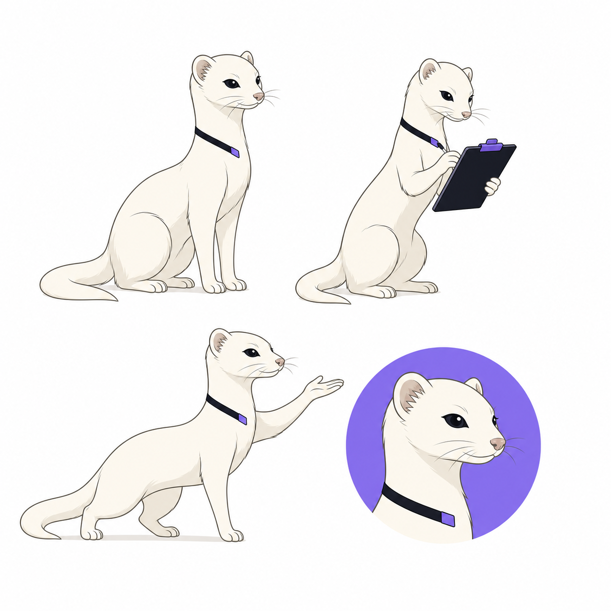
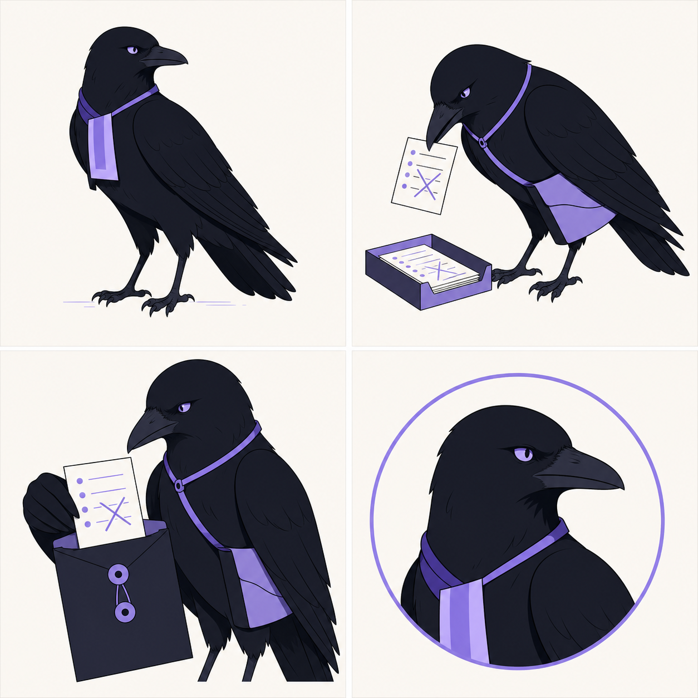

WANIONRUN BY STUDIO HOOJE
DIRECTION 01
STRATEGY PICK · 01RAID DESK
여러 사람의 시간과 역할을 한눈에 정렬하는 운영 데스크. WANION의 제품 기능을 가장 솔직하게 브랜드로 바꾼 안입니다.
SYMBOL & WORDMARK

ROSTER BARS
OPERATION EMOJI
▰준비▱미정●확정↳대기!확인
WANI VOICE
모집이 열렸어요. 현재 힐러 1자리가 비어 있어요.
출발 30분 전입니다. 준비 상태를 확인해 주세요.
스왑 요청 1건이 있어요. 공대장 확인이 필요합니다.
추천 이유
운영 기능, 작은 아이콘, Discord 알림, 애드온까지 가장 흔들림 없이 확장됩니다.
운영 기능, 작은 아이콘, Discord 알림, 애드온까지 가장 흔들림 없이 확장됩니다.
DIRECTION 02
EVENT FLOWTHE BATON
모집부터 결과까지 판단과 차례가 끊기지 않게 이어지는 인계의 브랜드입니다.
SYMBOL & WORDMARK
WANIONRUN BY STUDIO HOOJE
HANDOFF MARKS
╱ ╲╱╲╲ ╱╱·╱╲·╲
FLOW EMOJI↗시작≫전달Ⅱ대기✓완료⌁변경
WANI VOICE
일정을 넘겨받았어요. 다음 확인은 공대장 차례예요.
두 분의 응답이 아직 전달되지 않았어요.
모든 확인이 끝났어요. 출발 단계로 넘길게요.
강점
알림과 체크인 흐름이 명확합니다. 스포츠·물류처럼 보이지 않도록 절제가 필요합니다.
알림과 체크인 흐름이 명확합니다. 스포츠·물류처럼 보이지 않도록 절제가 필요합니다.
DIRECTION 03
PREMIUM TONERAID SCORE
각자의 준비와 타이밍을 하나의 큐로 조율하는 가장 침착하고 프리미엄한 안입니다.
SYMBOL & WORDMARK
WANIONRUN BY STUDIO HOOJE
CUE BARS
ⅠⅡⅢⅣ∥
CUE EMOJIⅠ대기Ⅱ확인Ⅲ준비Ⅳ출발•호출
WANI VOICE
다음 큐는 22:00입니다.
힐러 응답이 맞지 않았어요. 한 번 더 확인할게요.
전원 준비. 출발 큐를 기다립니다.
강점
가장 세련되고 문화적인 인상입니다. 음악 서비스로 오인되지 않게 운영 용어를 유지해야 합니다.
가장 세련되고 문화적인 인상입니다. 음악 서비스로 오인되지 않게 운영 용어를 유지해야 합니다.
DIRECTION 04
CONTROL SYSTEMSWITCHBOARD
빠진 자리와 상태 전환을 즉시 발견하는 관제형 브랜드입니다.
SYMBOL & WORDMARK
WANIONRUN BY STUDIO HOOJE

POSITION TABS
INOUTHOLDSWAPLOCK
STATUS EMOJI▣참여□불참Ⅱ보류⇄교체■확정
NION BOT VOICE
자리를 잠갔어요.
딜러 2명이 HOLD 상태입니다.
교체 요청이 들어왔어요. 공대장 확인이 필요합니다.
강점
스왑·결원 관리와 가장 직접적입니다. 차가운 B2B 도구처럼 보이지 않게 캐릭터 온도가 중요합니다.
스왑·결원 관리와 가장 직접적입니다. 차가운 B2B 도구처럼 보이지 않게 캐릭터 온도가 중요합니다.
DIRECTION 05
ORIGIN STORYWANE INDEX
레이드는 달과 같습니다. 모집으로 차오르고, 명단이 완성되면 만월에 닿고, 출발과 기록을 지나 기운 뒤 다음 주기에 다시 시작합니다. WANION의 고어 어원을 주간 운영 체계로 전환한 방향입니다.
SYMBOL & WORDMARK
WANIONRUN BY STUDIO HOOJE
WEEKLY PHASE INDEX
PHASE LANGUAGE
○모집◔구성●확정◕출발◑기록
NION BOT VOICE
이번 주기가 시작됐어요. 모집을 열었습니다.
명단이 거의 찼어요. 힐러 한 자리가 남았습니다.
이번 주기는 마무리됐어요. 기록을 남기고 다음 주기를 준비합니다.
스토리 강점
이름의 어원, 주간 캘린더, 복수 파티의 진행 상태를 하나의 시각 언어로 묶습니다. 달은 장식이 아니라 운영 인덱스이며, 저주·오컬트·블랙메탈 인상은 외부 표현에서 배제합니다.
이름의 어원, 주간 캘린더, 복수 파티의 진행 상태를 하나의 시각 언어로 묶습니다. 달은 장식이 아니라 운영 인덱스이며, 저주·오컬트·블랙메탈 인상은 외부 표현에서 배제합니다.